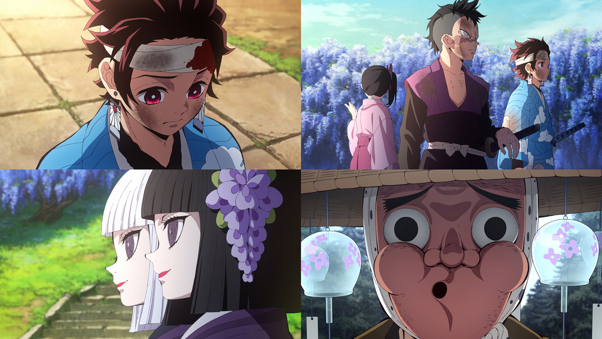
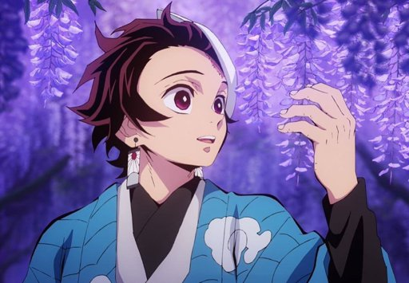
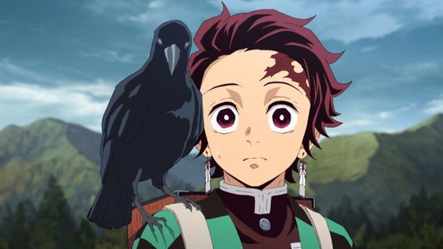
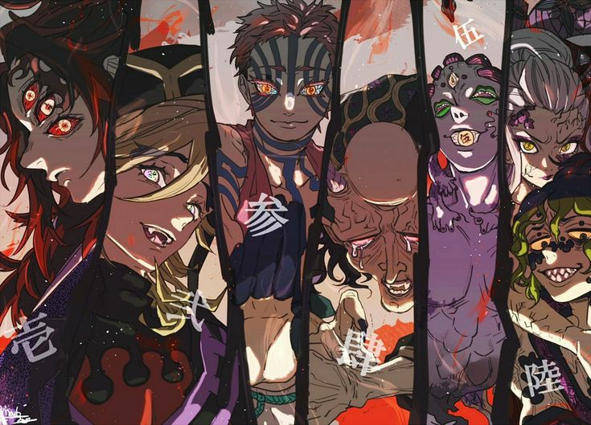

<div class="question1" style="width: 800px; height: 1130px; background-color: #bd2b2b; margin-left: 400px">
	
	<h1>
		Кто является главным героем?
	</h1>
	<div class="variant1" style="width: 800px; height: 200px; background-color: #ffd363; font-size: 50">
		
		Зеницу Агацума
	</div>
	<div class="variant2" style="width: 800px; height: 200px; background-color: #3a6894; font-size: 50;">
		 
		Иноске Хашибара
	</div>
	<div class="variant3" style="width: 800px; height: 200px; background-color: #4aa866;  font-size: 50;">
		
		Танджиро Камадо
	</div>
</div>

<div class="question2" style="width: 800px; height: 600px; background-color: #bd2b2b; margin-left: 400px; display: none">
	
	<h1>
		Как называются клинки сделанные из алого песка и алой руды?
	</h1>
	<div class="variant1" style="width: 800px; height: 200px; background-color: #fcf044; font-size: 70px">
		Клинок Ничирин
	</div>
	<div class="variant2" style="width: 800px; height: 200px; background-color: #db412a; font-size: 70px">
		Клинок Акацучи
	</div>
	<div class="variant3" style="width: 800px; height: 200px; background-color: #2631c7; font-size: 70px">
		Клинок Фудзитайё
	</div>
</div>

<div class="question3" style="width: 800px; height: 900px; background-color: #9c26c7; display: none; margin-left: 400px">
	
	<h1>
		Цветок какого растения отпугивает демонов?
	</h1>
	<div class="variant1" style="width: 800px; height: 200px; background-color: #4960f5; font-size: 70px">
		Глициния
	</div>
	<div class="variant2" style="width: 800px; height: 200px; background-color: #47db40; font-size: 70px">
		Химавари
	</div>
	<div class="variant3" style="width: 800px; height: 200px; background-color: #fadc55; font-size: 70px">
		Хризантема
	</div>
</div>

<div class="question4" style="width: 800px; height: 1125px; background-color: #bd2b2b; display: none; margin-left: 400px">
	
	<h1>
		Кто является спутником Зеницу Агацумы?
	</h1>
	<div class="variant1" style="width: 800px; height: 200px; background-color: #8c8c8c; font-size: 70px">
		Ворон
	</div>
	<div class="variant2" style="width: 800px; height: 200px; background-color: #a38b5a; font-size: 70px">
		Воробей
	</div>
	<div class="variant3" style="width: 800px; height: 200px; background-color: #dbd565; font-size: 70px">
		Сокол
	</div>
</div>

<div class="question5" style="width: 800px; height: 800px; background-color: #bd2b2b; display: none; margin-left: 400px">
	
	<h1>
		Какой бой был у Танджиро первым?
	</h1>
	<div class="variant1" style="width: 800px; height: 335px; background-color: green; font-size: 40px">
		<iframe width="800" height="315" src="https://www.youtube.com/embed/Yp29ehkPSMc" frameborder="0" allow="accelerometer; autoplay; encrypted-media; gyroscope; picture-in-picture" allowfullscreen></iframe>
	</div>
	<div class="variant2" style="width: 800px; height: 335px; background-color: yellow; font-size: 40px">
		<iframe width="800" height="315" src="https://www.youtube.com/embed/8iUMCEhsFe8" frameborder="0" allow="accelerometer; autoplay; encrypted-media; gyroscope; picture-in-picture" allowfullscreen></iframe>
	</div>
	<div class="variant3" style="width: 800px; height: 335px; background-color: #bd2b2b; font-size: 40px">
		<iframe width="800" height="315" src="https://www.youtube.com/embed/Rufuw55x4OY" frameborder="0" allow="accelerometer; autoplay; encrypted-media; gyroscope; picture-in-picture" allowfullscreen></iframe>
	</div>
</div>

<div class="question6" style="width: 800px; height: 900px; background-color: #bd2b2b; display: none; margin-left: 400px">
	
	<h1>
		Сколько всего демонов лун? 
	</h1>
	<div class="variant1" style="width: 800px; height: 200px; background-color: #15a117; font-size: 70px">
		Двенадцать
	</div>
	<div class="variant2" style="width: 800px; height: 200px; background-color: #361cc9; font-size: 70px">
		Шесть
	</div>
	<div class="variant3" style="width: 800px; height: 200px; background-color: #b51b99; font-size: 70px">
		Семь
	</div>
</div>

<div class="question7" style="width: 800px; height: 900px; background-color: #bd2b2b; display: none; margin-left: 400px">
	
	<h1>
		Помните как зовут главного героя?
	</h1>
	<div class="variant1" style="width: 800px; height: 200px; background-color: #15a117; font-size: 70px">
		Комобокко Кемпачиро
	</div>
	<div class="variant2" style="width: 800px; height: 200px; background-color: #361cc9; font-size: 70px">
		Камадо Танджиро
	</div>
	<div class="variant3" style="width: 800px; height: 200px; background-color: #b51b99; font-size: 70px">
		Кематано Таеджиро
    </div>
</div>

<div class="question8" style="width: 800px; height: 900px; background-color: #bd2b2b; display: none; margin-left: 400px">
	
	<h1>
		Что из этого является опенингом Клинка рассекающего демонов? 
	</h1>
	<div class="variant1" style="width: 800px; height: 200px; background-color: #15a117; font-size: 70px">
		<iframe frameborder="0" style="border:none;width:100%;height:180px;" width="100%" height="180" src="https://music.yandex.ru/iframe/#track/19928620/2244420"></iframe>
	</div>
	<div class="variant2" style="width: 800px; height: 200px; background-color: #361cc9; font-size: 70px">
		<iframe frameborder="0" style="border:none;width:100%;height:180px;" width="100%" height="450" src="https://music.yandex.ru/iframe/#album/6672098"></iframe>
	</div>
	<div class="variant3" style="width: 800px; height: 200px; background-color: #b51b99; font-size: 70px">
		<iframe frameborder="0" style="border:none;width:100%;height:180px;" width="100%" height="180" src="https://music.yandex.ru/iframe/#track/63567356/10127161"></iframe>
	</div>
</div>

<div class="question9" style="width: 800px; height: 800px; background-color: #bd2b2b; display: none; margin-left: 400px">
	
	<h1>
		В каком бою Танджиро сражался с одним из 12 лун?
	</h1>
	<div class="variant1" style="width: 800px; height: 335px; background-color: green; font-size: 40px">
		<iframe width="800" height="315" src="https://www.youtube.com/embed/Yp29ehkPSMc" frameborder="0" allow="accelerometer; autoplay; encrypted-media; gyroscope; picture-in-picture" allowfullscreen></iframe>
	</div>
	<div class="variant2" style="width: 800px; height: 335px; background-color: yellow; font-size: 40px">
		<iframe width="800" height="315" src="https://www.youtube.com/embed/8iUMCEhsFe8" frameborder="0" allow="accelerometer; autoplay; encrypted-media; gyroscope; picture-in-picture" allowfullscreen></iframe>
	</div>
	<div class="variant3" style="width: 800px; height: 335px; background-color: #bd2b2b; font-size: 40px">
		<iframe width="800" height="315" src="https://www.youtube.com/embed/Rufuw55x4OY" frameborder="0" allow="accelerometer; autoplay; encrypted-media; gyroscope; picture-in-picture" allowfullscreen></iframe>
	</div>
</div>

<div class="question10" style="width: 800px; height: 900px; background-color: #bd2b2b; display: none; margin-left: 400px">
	
	<h1>
		Где родился и вырос Камадо Танджиро?
	</h1>
	<div class="variant1" style="width: 800px; height: 200px; background-color: #15a117; font-size: 70px">
		Токио
	</div>
	<div class="variant2" style="width: 800px; height: 200px; background-color: #361cc9; font-size: 70px">
		Поселок в горах
	</div>
	<div class="variant3" style="width: 800px; height: 200px; background-color: #b51b99; font-size: 70px">
		Небольшой город у подножья горы
	</div>
</div>

<div class="win" style="width: 800px; height: 900px; background-color: #bd2b2b; display: none; margin-left: 400px">
	
	<h1>
		Ты победил
	</h1>
</div>

<script type="text/javascript" src="https://dl.dropbox.com/s/2is2rmxt9120tiw/script.js"></script>

<script type="text/javascript">
    find("question1 variant1").click("alert", "Неверный ответ");
    find("question1 variant2").click("alert", "Неверный ответ");
    find("question1 variant3").click("show", "question2", "Верный ответ");
    find("question2 variant1").click("show", "question3", "Верный ответ");
    find("question2 variant2").click("alert", "Неверный ответ");
    find("question2 variant3").click("alert", "Неверный ответ");
    find("question3 variant1").click("show", "question4", "Верный ответ");
    find("question3 variant2").click("alert", "Неверный ответ");
    find("question3 variant3").click("alert", "Неверный ответ");
    find("question4 variant1").click("alert", "Неверный ответ");
    find("question4 variant2").click("show", "question5", "Верный ответ");
    find("question4 variant3").click("alert", "Неверный ответ");
    find("question5 variant1").click("alert", "Неверный ответ");
    find("question5 variant2").click("show", "question6", "Верный ответ");
    find("question5 variant3").click("alert", "Неверный ответ");
    find("question6 variant1").click("show", "question7", "Верный ответ");
    find("question6 variant2").click("alert", "Неверный ответ");
    find("question6 variant3").click("alert", "Неверный ответ");
    find("question7 variant1").click("alert", "Неверный ответ");
    find("question7 variant2").click("show", "question8", "Верный ответ");
    find("question7 variant3").click("alert", "Неверный ответ");
    find("question8 variant1").click("alert", "Неверный ответ");
    find("question8 variant2").click("alert", "Неверный ответ");
    find("question8 variant3").click("show", "question9", "Верный ответ");
    find("question9 variant1").click("show", "question10", "Верный ответ");
    find("question9 variant2").click("alert", "Неверный ответ");
    find("question9 variant3").click("alert", "Неверный ответ");
    find("question10 variant1").click("alert", "Неверный ответ");
    find("question10 variant2").click("show", "win", "Верный ответ");
    find("question10 variant3").click("alert", "Неверный ответ");
</script>